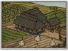

Requires
- Arts:

Enables
- Buildings: 
- Arts:

Effects
- +2% wealth generated by farms across all provinces
Description
Agriculture is key to the development of a successful clan. Armies cannot march if hungry, and peasants cannot work if starving. Investing in equal fields improves the yield of all farms in a province. Terrace farming allows use of steep landscapes for fields, where it was previously impossible to grow crops.
For all its size, Japan has remarkably little natural farmland. The rice paddies are a beautiful contrast to the country's jagged mountainous peaks, but somewhat constrained. Every square inch has to be put to a sensible use. Rice as a crop is a good use, although the mythical origins of rice are not exactly pleasant.
During a chance meeting Susano-Wo, the storm god, ordered Uke-Mochi, the food goddess, to give him food. To meet his somewhat boisterous demands, Uke-Mochi pulled food from her own mouth, nose and bottom. In a rage, Susano-Wo killed her, and from her corpse sprang all the basic food crops: from her ears, millet; from her eyes, rice; from her nose, red beans; from her genitals, wheat; and from her backside, soybeans. Some versions blame Tsukiyomi, the moon god, for the killing, but all myths are agreed about the unpleasant origins of soy!